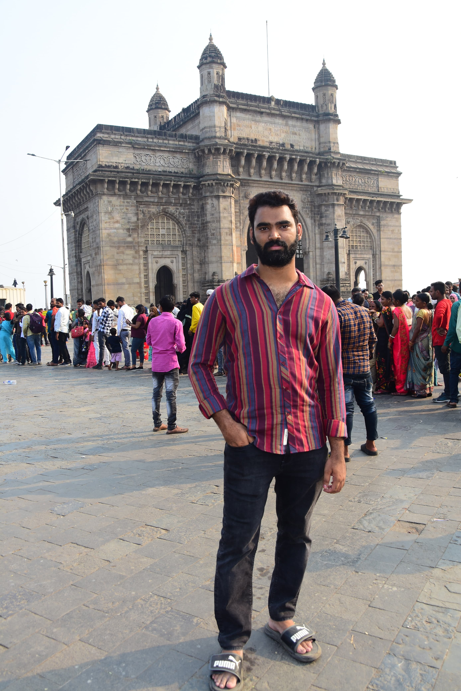

I like Nee Singham Dhan song very much.It was sung by A.R.Rahman.This song is from Pathu Thala film.Simbu is the protagonist of the film.The visuals in the song are stunning and music is so peaceful.
Leader is my favorite telugu movie.It was directed by Shekhar Kammula.Rana Daggubati is the protagonist.The movie has great dialogues and it revolves around state politics.The protagonist is the chief minister in the film.
This table provides suggestions regarding book/song/video.
| Name | Reason to recommend | Creator |
|---|---|---|
| Atomic Habits | Inspring | James Clear |
| Baby Song | Music | Justin Bieber |
| Tum Ho | Locations in the song | A.R.Rahman |
| The test of my life | Inspiring | Sachin Tendulkar |